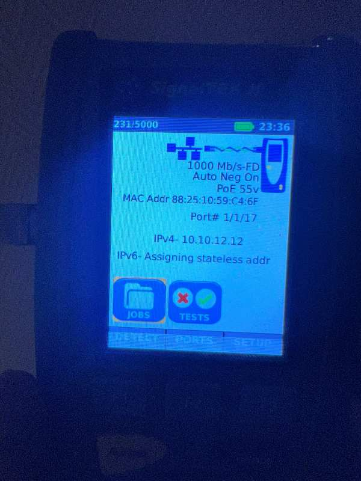

Une caisse qui ne prend plus la carte bancaire, une visio qui décroche devant un client, un logiciel métier qui se fige. Vous avez déjà ajouté un répéteur, changé de box, appelé l'opérateur.
Une panne de WiFi sur trois n'est pas un problème de WiFi.
Demander un audit de couverture
Trop de terminaux sur une borne unique, ou un canal saturé par les réseaux voisins.
Couverture non étudiée : murs porteurs, cloisons métalliques, réserve, cave, étage.
Cas fréquent en commerce, et le plus coûteux à laisser traîner.
Le problème est souvent en amont du WiFi : ligne, atténuation, matériel opérateur mal paramétré.
Instabilité et latence, pas manque de débit brut. Deux problèmes différents, deux diagnostics.
Réseau invité inexistant ou mal séparé du réseau de production.
Ce n'est pas de l'équipement d'installateur informatique. C'est celui d'un technicien opérateur — et c'est ce qui me permet de vous montrer les chiffres au lieu de vous demander de me croire.
Qualification du câblage, longueur des paires, test PoE.
Lignes ADSL, VDSL, RTC : débit réellement synchronisable, atténuation, bruit.
Liaisons symétriques d'entreprise. Peu de prestataires savent seulement les tester.
Localise une coupure fibre au mètre près sur toute la longueur.
Je soude la fibre sur place. Diagnostiquer est une chose, réparer en est une autre.
Poste de terrain durci : local technique, cave, toiture.
Relevé pièce par pièce, analyse des canaux, qualification de la ligne d'accès. Vous recevez un rapport écrit — et il vous appartient : vous êtes libre de le faire exécuter par qui vous voulez.
Bornes Aruba, Ruckus, Zyxel — de l'infrastructure professionnelle, pas du matériel de grande surface. Une borne bien placée remplace souvent trois répéteurs mal posés.
Vos clients accèdent à Internet sans toucher à votre réseau de travail. Je livre le portail avec la conservation des données de connexion — un point que la plupart des installateurs laissent de côté, et qui ne se rattrape pas après coup.
Je diagnostique avant de proposer de remplacer : dans une bonne part des cas, un problème de configuration, de canal ou de ligne se corrige sans changer le matériel.
Décrivez-moi votre situation, je vous dis en quelques minutes si un audit est justifié.